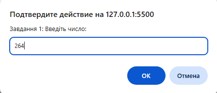
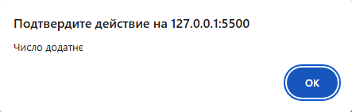
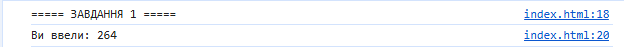

console.log("===== ЗАВДАННЯ 1 ====="); let value = prompt("Завдання 1: Введіть число:"); console.log(`Ви ввели: ${value}`); let number = Number(value); if (isNaN(number)) { alert("Ви ввели не число!"); } else if (number > 0) alert("Число додатнє"); else if (number < 0) alert("Число від'ємне"); else alert("Число дорівнює нулю");


